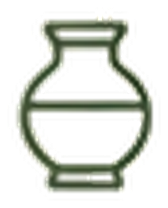
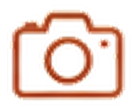

Descubra paisagens, sabores e histórias
Experiências autênticas no coração do Seridó
Explorar destinos
Experiências autênticas no coração do Seridó
Explorar destinosNatureza
Serras, cânions e mirantes.Cultura
História, fé e tradições.
Gastronomia
Sabores típicos e cozinha regional.
Aventura
Trilhas, esportes e contato com a natureza.Artesanato
Talento local e arte do Seridó.Eventos
Festas, vaquejadas e cultura popular.
Pedra do Rosário, Furna da Onça e belezas inesquecíveis.
Região do Seridó
Ilha de Sant'Ana, cultura e uma história que encanta.
Região do Seridó
Pedra da Boca, mirantes e hospitalidade do interior.
Região do Seridó